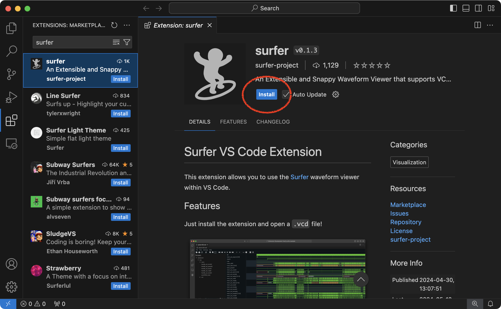

Section 1: Linux Development Environment
This discussion section serves as gentle introduction to the basics of
using the Linux development environment on the ecelinux servers. We
will be using the ecelinux servers for all of the lab assignments. The
ecelinux servers all run the Red Hat Enterprise Linux 8 operating
system, and they all use an identical setup. Linux is the operating
system of choice for hardware design, so becoming familiar with Linux
will pay dividends beyond just this course. In the discussion section, we
will learn how to log into the servers using PowerShell, how to log into
the servers using VS Code, how to work at the Linux command line, and how
to use Git version control.
1. Logging Into ecelinux with PowerShell
We will start by using PowerShell to log into the ecelinux servers.
Although most of the time you will be using VS Code to log into the
ecelinux servers, you may occassionally need to use PowerShell (or Mac
Terminal if you are using a Mac OS X) if VS Code stops working.
1.1. Logging into ecelinux Servers with PowerShell
To start PowerShell click the Start menu then search for Windows PowerShell. After starting PowerShell, type in the following command at the prompt to log into the ecelinux servers using SSH.
Replace netid with your Cornell NetID in the command above. You should
not enter the % character. We use the % character to indicate what
commands we should enter on the command line. Executing the command will
prompt you to enter your Cornell NetID password, and then you should be
connected to the ecelinux servers.
The very first time you log into the ecelinux servers you may see a warning like this:
The authenticity of host ’ecelinux.ece.cornell.edu (128.253.51.206)’
can’t be established. ECDSA key fingerprint is
SHA256:smwMnf9dyhs5zW5I279C5oJBrTFc5FLghIJMfBR1cxI.
Are you sure you want to continue connecting (yes/no)?
The very first time you log into the ecelinux servers it is okay to
enter yes, but from then on if you continue to receive this warning
please contact the course staff.
1.2. Using PowerShell
The very first thing you need to do after opening a terminal is source the course setup script. This will ensure your environment is setup with everything you need for working on the lab assignments. Enter the following command on the command line:
Note that you do not need to enter % character. In a tutorial like
this, the % simply indicates what you should type at the command line.
You should now see ECE 2300 in your prompt which means your environment
is setup for the course.
It can be tedious to always remember to source the course setup script. You can also use auto setup which will automatically source the course setup for you when you log in. Note that if the environment for ECE 2300 conflicts with the environment required by a different course then you will need to manually source the setup script when you are working on this course. Enter the following command on the command line to use auto setup:
If at anytime you need to disable auto setup you can use the following command:
2. Logging Into ecelinux with VS Code
While PowerShell is fine for basic work at the Linux command line, it is
not a productive way to develop large and complicated computer
engineering projects. We instead, recommend students use VS Code to log
into the ecelinux servers. VS Code provides a nice GUI for navigating
the directory hierarchy on ecelinux, great syntax highlighting for
Verilog hardware designs, the ability to open many files at once using
tabs, and an integrated remote terminal for running commands at the Linux
command line. When using VS Code it is important to keep in mind that the
GUI interface runs completely on the local workstation and then
automatically handles copying files back and forth between the local
workstation and the ecelinux servers.
Note, if you have already installed VS Code on your laptop, then you should feel free to use your laptop for this discussion section. However, if you have not already installed VS Code on your laptop and verified it works, then please use the workstations in 225 Upson. We do not have time to help you setup VS Code on your own laptop in the discussion section.
2.1. Logging into ecelinux Servers with VS Code
To start VS Code click the Start menu then search for Visual Studio
Code. The key to VS Code is installing the correct extensions. We want
to start by installing a special extension for the Verilog hardware
description language (HDL). We also want to install a special extension
which will enable remotely accessing the ecelinux servers using SSH.
Choose View > Extensions from the menubar. Enter the name of the
extension in the "Search Extensions in Marketplace" and then click the
blue Install button. Here are the names of the extensions to install:
- Remote - SSH (use the one from Microsoft)
- Verilog (use the one from Masahiro Hiramori)
- Surfer (use the one from surfer-project)



Now we need to log into the ecelinux servers. Choose View > Command
Palette from the menubar. This will cause a little "command palette" to
drop down where you can enter commands to control VS Code. Enter the
following command in the command palette:
Remote-SSH: Connect Current Window to Host...
As you start typing matching commands will be displayed and you can just click the command when you see it. VS Code will then ask you to Enter SSH Connection Command, and you should enter the following:
netid@ecelinux.ece.cornell.edu
Replace netid with your Cornell NetID in the command above.
You may see a pop-up which stays that the Windows Defender Firewall as
blocked some features of this app. This is not a problem. Simply click
Cancel. You might also see a drop down which asks you to choose the
operating system of the remote server with options like Linux and
Windows. Choose Linux. Finally, the very first time you log into the
ecelinux servers you may see a warning like this:
"ecelinux.ece.cornell.edu" has fingerprint
"SHA256:YCh2FiadeTXEzuSkC0AOdglBgPciwc8WvcCPncvr2Fs"
Are you sure you want to continue?
Continue
Cancel
Also the very first time you log into the ecelinux servers you will see
a pop up dialog box in the lower right-hand corner which says Setting up
SSH host ecelinux.ece.cornell.edu (details) Initializing.... It might
take up to a minute for everything to be setup; please be patient! Once
the pop up dialog box goes away and you see SSH:
ecelinux.ece.cornell.edu in the lower left-hand corner of VS Code then
you know you are connected to the ecelinux servers.
The final step is to make sure your extensions for the Verilog HDL and
Surfer are also installed on the server. Choose View > Extensions from
the menubar. Use the "Search Extensions in Marketplace" to search for the
same Verilog HDL extensions that we installed earlier. Instead of saying
Install it should now say Install in SSH: ecelinux.ece.cornell.edu.
Install the Verilog HDL extension on the ecelinux servers. You only
need to do this once, and then next time this extension will already be
installed on the ecelinux servers.
2.2. Using VS Code
VS Code includes an integrated file explorer which makes it very
productive to browse and open files. Choose View > Explorer from the
menubar, and then click on Open Folder. VS Code will then ask you to
Open File Or Folder with a default of /home/netid. Click OK.
You might see a pop-up which asks you Do you trust the authors of the
files in this folder? Since you will only be browsing your own files on
the ecelinux server, it is fine to choose Yes, I trust the authors.
This will reload VS Code, and you should now you will see a file explore in the left sidebar. You can easily browse your directory hierarchy, open files by clicking on them, create new files, and delete files.
VS Code includes an integrated terminal which will give you access to the
Linux command line on the ecelinux servers. Choose Terminal > New
Terminal from the menubar. You should see the same kind of Linux command
line prompt that you saw when using PowerShell.
Remember, the very first thing you need to do after logging into the ecelinux servers is source the course setup script. If you used --enable-auto-setup in the last section, then the setup script is already sourced for you automatically when you log into the ecelinux servers. If not, you will need to enter the following command on the command line:
You should now see ECE 2300 in your prompt which means your environment
is setup for the course.
3. Linux Command Line
We will using the ecelinux servers which run the Linux operating system
for all of the lab assignments. The heart of the Linux operating system
is the Linux command line. This is a text-based console where you can
enter commands to interact with the operating system.
3.1 Hello World
We begin with the ubiquitous "Hello, World" example. To display the
message "Hello, World" we will use the echo command. The echo command
simply "echoes" its input to the console.
The string we provide to the echo command is called a command line
argument. We use command line arguments to tell commands what they
should operate on. Again, note that you do not need to enter %
character.
3.2. Manual Pages
You can learn more about any Linux command by using the man command.
Try using this to learn more about the echo command.
You can use the up/down keys to scroll the manual one line at a time, the
space bar to scroll down one page at a time, and the q key to quit
viewing the manual.
3.3. Create, View, and List Files
We can use the echo command and a feature called command output
redirection to create simple text files. Command output redirection is
discussed more in the full tutorial. Command output redirection uses the
> operator to take the output from one command and "redirect" it to a
file. The following commands will create a new file named
ece2300-sec01.txt that simply contains the text "Digital Logic and
Computer Organization".
We can use the cat command to quickly display the contents of a file.
For larger files, cat will output the entire file to the console so it
may be hard to read the file as it streams past. We can use the less
command to show one screen-full of text at a time. You can use the
up/down keys to scroll the file one line at a time, the space bar to
scroll down one page at a time, and the q key to quit viewing the file.
The > command output redirection operator will always create a brand
new file (even if the target output file already exists). You can use the
>> operator to append lines to the end of a file. Let's add another
line to our text file using the >> operator.
% echo "Using the Verilog Hardware Description Language" >> ece2300-sec01.txt
% cat ece2300-sec01.txt
You can use the ls command to list the filenames of the files you have
created.
We can provide command line options to the ls command to modify the
command’s behavior. For example, we can use the -1 (i.e., a dash
followed by the number one) command line option to list one file per
line, and we can we can use the -l (i.e., a dash followed by the letter
l) command line option to provide a longer listing with more information
about each file.
3.4. Create, Change, and List Directories
Obviously, having all files in a single location would be hard to manage
effectively. We can use directories (also called folders) to logically
organize our files, just like one can use physical folders to organize
physical pieces of paper. The mechanism for organizing files and
directories is called the file system. When you first login to an
ecelinux machine, you will be in your home directory. This is your own
private space on the server that you can use to work on the lab
assignments and store your files. You can use the pwd command to print
the directory in which you are currently working, which is known as the
current working directory.
You should see output similar to what is shown above, but instead of
netid it should show your actual NetID. The pwd command shows a
directory path. A directory path is a list of nested directory names; it
describes a "path" to get to a specific file or directory. So the above
path indicates that there is a toplevel directory named home that
contains a directory named netid. This is the directory path to your
home directory. As an aside, notice that Linux uses a forward slash (/)
to separate directories, while Windows uses a back slash (\) for the
same purpose.
We can use the mkdir command to make new directories. The following
command will make a new directory named ece2300 within your home
directory.
We can use the cd command to change our current working directory. The
following command will change the current working directory to be the
newly created ece2300 directory, before displaying the current working
directory with the pwd command.
Use the mkdir, cd, and pwd commands to make another directory.
We sometimes say that test is a subdirectory or a child directory of
the ece2300 directory. We might also say that the ece2300 directory
is the parent directory of the test directory. Use the following
command to create a new file in this child directory.
% cd /home/netid/ece2300/test
% echo "Digital Logic and Computer Organization" > ece2300-sec01.txt
% mkdir dirA
% ls
You can use the tree command to visualize the directory layout and
where files are located:
Note that the tilde character (~) is a shortcut which always refers to
your home directory. There are a few other very useful shortcuts. You can
use a single dot (.) to refer to the current working directory, and you
can use a double dot (..) to refer to the parent directory of the
current working directory.
3.5. Copy, Move, and Remove Files and Directories
We can use the cp command to copy files. The first argument is the name
of the file you want to copy, and the second argument is the new name to
give to the copy. The following commands will make two copies of the
files we created in the previous section.
% cd ~/ece2300/test
% cp ece2300-sec01.txt ece2300-sec01-a.txt
% cp ece2300-sec01.txt ece2300-sec01-b.txt
% ls
Instead of copying we can also move a file with the mv command:
Finally, we can use the rm command to remove files.
We have installed a simple program called trash which moves files you
wish to delete into a special subdirectory of your home directory located
at ~/tmp/trash. The following commands create a file and then
deletes it using trash.
% cd ~
% echo "This file will be deleted." > testing.txt
% trash testing.txt
% echo "This file will also be deleted." > testing.txt
% trash testing.txt
% ls ~/tmp/trash
If you look in ~/tmp/trash you will see subdirectories organized by
date. Look in the subdirectory with today's date and you should two files
corresponding to the two files you deleted. We highly recommend always
using the trash command instead of rm since this avoids accidentally
deleting your work.
3.6. Using VS Code to Work with Files
VS Code makes it easy to create and open files for editing from the
command line. To open an existing file for editing use the code command
on the command line. For example, you can open the ece2300-sec01.txt
file like this:
Add some text of your choice to the bottom of the file. Then use File >
Save and then use cat to verify your changes through the command line.
If you use the code command and the file does not exist, then VS Code
will automatically create a new file with the corresponding filename.
Enter some text, save the file, and use cat to verify your chagnes
through the command line. You can also use VS Code's integrated file
explorer to create files and open files for editing.
4. GitHub Account Setup
We will be using GitHub for centralized repository hosting. You can check
to see if you have a GitHub account on github.com using this link:
https://github.com/githubid where githubid is your GitHub username on
github.com. If the above link does not work, then you do not have an
GitHub account on github.com. NOTE: We are using github.com not the
Cornell hosted GitHub! You will need to create one here:
Your NetID makes a great GitHub username on github.com. If you are
creating a new GitHub account, then be sure to use your Cornell email
address. If you have an existing account it is fine for it to use a
non-Cornell email address.
Once your account is setup, please make sure you set your full name so we can know who you are on GitHub. Please also consider uploading a profile photo to GitHub; it makes it more fun to interact on GitHub if we all know what each other look like. Go to the following page and enter your first and last name in the Name field, and then consider uploading a profile photo.
Once you have a GitHub username, please fill out the following online so the instructors know the mapping from NetID to GitHub username:
Before you can begin using GitHub, you need to create an SSH key pair on
an ecelinux machine and upload the corresponding SSH public key to
GitHub. GitHub uses these keys for authentication. The course setup
script takes care of creating an SSH key pair which you can use. View the
contents of your public key using the following commands:
Use the following page to upload the public key to GitHub:
Click on New SSH Key, and then cut-and-paste the public key you
displayed using cat into the key textbox. Give the key the title
ece2300-github. Then click Add SSH key. To test things out try the
following command:
You may see a warning about the authenticity of the host. Don’t worry,
this is supposed to happen the first time you access GitHub using your
new key. Just enter yes. The GitHub server should output some text
including your GitHub username. Verify that the GitHub username is
correct, and then you should be all set.
5. Git Version Control System
In this course, we will be using Git as our revision control and source code management system. Git will enable us to adopt an agile development methodology so you (and your group) can rapidly collaborate and iterate on the design, verification, and evaluation of the assignments.
5.1. Fork and Clone a Repo from GitHub
Fork'ing a repo means making a copy of that repo for your own local use. We won't actually be forking repos for the lab assignments, but it is an easy way for you to grab some example code for the discussion section. Go to the example repo here:
Click on the "Fork" button. Wait a few seconds and then visit the new copy of this repo in your own person GitHub workspace:
https://github.com/githubid/ece2300-sec01-linux
Where githubid is your username on the public version of GitHub. Now
let's clone your new repo to the ecelinux machine.
% mkdir -p ece2300
% cd ~/ece2300
% git clone git@github.com:githubid/ece2300-sec01-linux sec01
% cd sec01
% cat README.md
Where githubid is your username on the public version of GitHub.
5.2. Adding and Committing Files to Local Repository
Now let's add some new files to the repository. Use VS Code to create a
file named warm-colors.txt:
Add three warm colors and save the file.
red
orange
yellow
Now use VS Code to create a file named cool-colors.txt:
Add three cool colors and save the file.
blue
green
purple
Now let's add these files to our repository. First use the git status
command to check on the status of the repository.
You should see that git has noticed two "untracked files" which are in the working directory but are not currently being tracked by git. Let's "add" these two files to git's "staging" area so it now knows it should keep track of them:
The status of these two files have changed. Git reports that both of the new files are ready to be committed. Let's go ahead and commit these changes into your local repository.
Let's now use echo and the >> command output redirection operator to
add cyan to the end of our cool-colors.txt file. We can then view our
changes from the command line using cat, and use git status and then
git commit to try and commit our changes.
% cd ~/ece2300/sec01
% echo "cyan" >> cool-colors.txt
% cat cool-colors.txt
% git status
% git commit -m "add cyan"
Git will report that there are no changes added to the commit. So even
though Git is tracking cool-colors.txt and knows it has changed, we
still must explicitly add the files we want to commit. We recommend using
the -a command line option with the git commit command to tell Git to
add any file which has changed and was previously added to the repository
before doing the commit.
Now the changes are committed. You can use git log to see a log of the
commits in your local repository.
5.3. Pushing Files to GitHub
Note that nothing has happened on GitHub yet. GitHub does not know anything about these local changes. We need to explicitly "push" our new commits up to GitHub like this:
Now go to the repository page using the GitHub web interface and verify that there are two new files.
https://github.com/githubid/ece2300-sec01-linux
5.4. Pulling Files from GitHub
Let's try making a change to this repository through the GitHub web interface.
https://github.com/githubid/ece2300-sec01-linux
Click on Add file and then Create new file. Name the file
logic-gates.txt and add a list of logic gates:
NOT
AND
OR
NAND
NOR
Now click Commit new file. Verify that there is a new file in the repo
using the GitHub web interface. Now let's "pull" these new changes from
GitHub to your local repo on ecelinux:
This will be the basic GitHub workflow were students first use clone to
get a copy of their repository, use commit -a to commit their code to
the local repository, and then use pull and push to synchronize their
repository with the repository on GitHub.
6. To-Do On Your Own
If you have time, add maroon to the warm-colors.txt file you created
earlier using VS Code. Save the file and then view your changes from the
command line using cat. Then use git status and git commit -a to
add these changes to local repository, and then use git push to push
these changes up to GitHub. View the changes using the GitHub web
interface.
Then try editing a file using the GitHub web interface. Click on the
warm-colors.txt file and then click on the pencil in the right-hand
corner to edit this text file. Add another warm color. Click Commit
changes. Then pull these changes to the local repository on the
ecelinux server and verify that your new warm color is included.